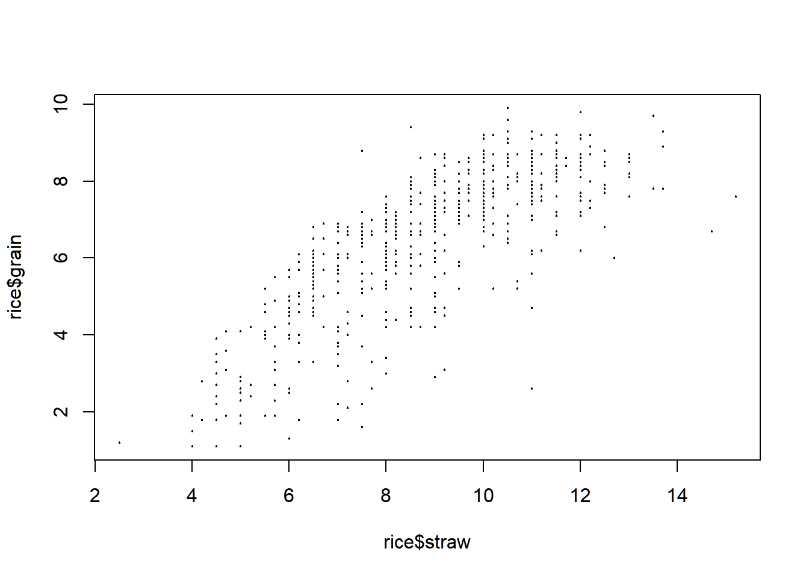
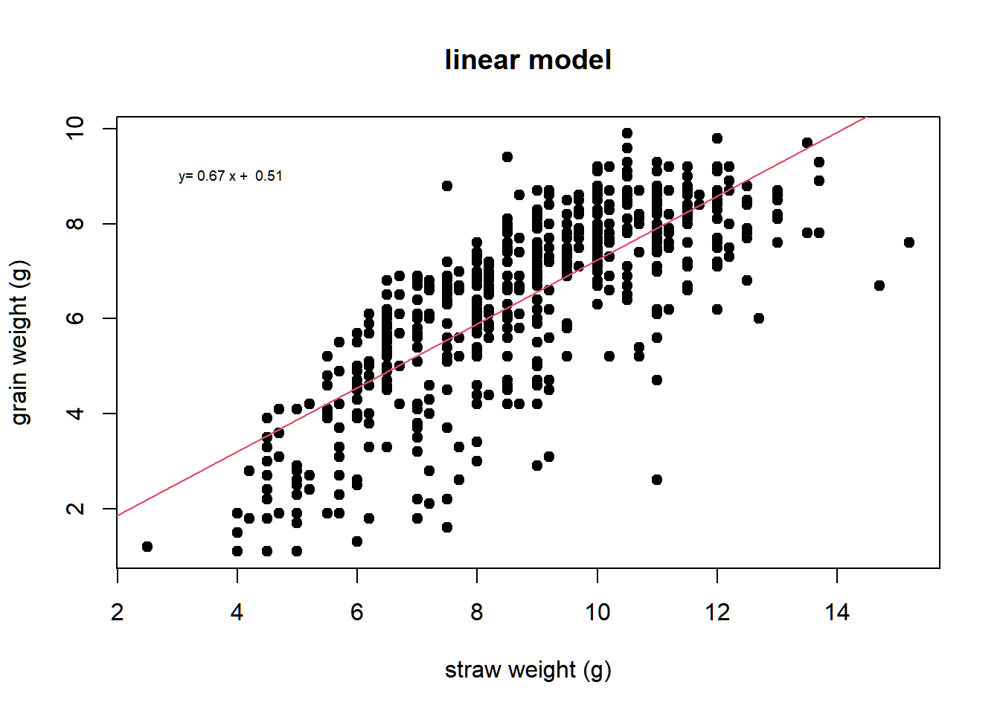
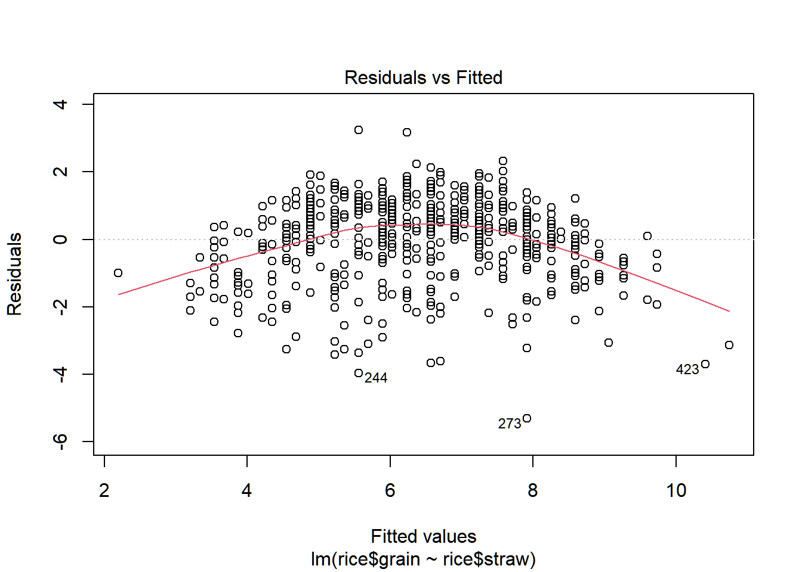
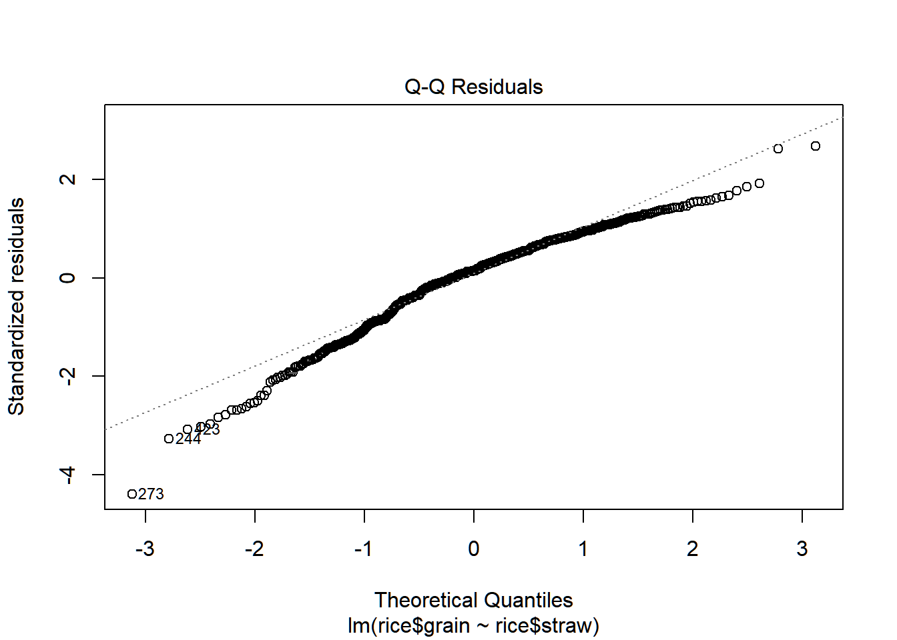
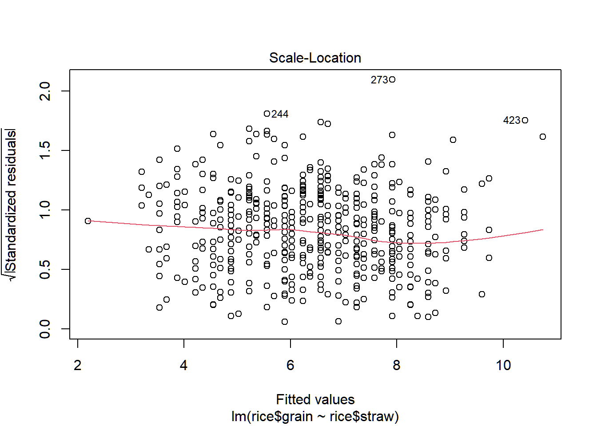
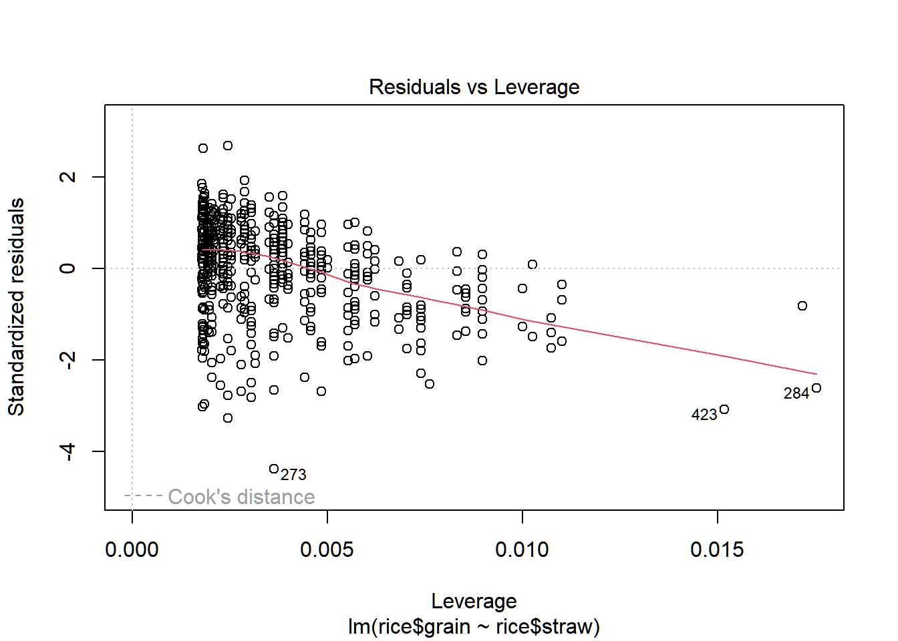

Created by Mauricio Cantor, with modifications by Laura J. Feyrer, Ana Eguiguren, and Reid Steele
This section covers basic linear modelling in R.
NOTE: On refresher pages, some code lines will be commented out to avoid file structure issues surrounding saving files, downloading packages, and changing working directories.
7.1 Running linear models
Linear modelling in R is done through the lm() function. The lm() function requires an x/y formula and data, which can be supplied directly via x/y vectors or through the data frame containing the data. Printing lm() and summary(lm()) prints various results of interest from the model.
# 7. Linear models in R (the basics) --------------------------------------# This is a VERY BASIC introduction to models in R. The idea here is just to illustrate how we create models, explore and plot them. We will cover statistical and biological details in the next classes and tutorials.# Basically, here we will repeat the same steps of our recipe: create an object, explore it with indexing tools, apply few functions.# we already have our data to work with.# Let's take a look in the function 'lm()' for linear modelshelp(lm)
starting httpd help server ... done
# Basically we need a formula and data. # Here's another way of getting data that is associated# # with a package:# install.packages("agridat")# if slow connection try running : options(timeout = 400)library(agridat)#this package has many datasets from agriculture?agridat #shows all different datasets?lord.rice.uniformity # gives details for this datasetdata("lord.rice.uniformity")head(lord.rice.uniformity)
#lets give it a shorter name to make our life easierrice <- lord.rice.uniformity#Let's pretend we are interested in the linear #relationship between straw weight and grain weightlm(grain ~ straw, data = rice)
# What do we have? The estimates for the linear function # parameters (intercept and slope)# if we save this model as an object:rice_mod <-lm(rice$grain ~ rice$straw) # RS Note: This is the same as lm(grain ~ straw, data = rice)# now we can take a look in other details:summary(rice_mod)
Call:
lm(formula = rice$grain ~ rice$straw)
Residuals:
Min 1Q Median 3Q Max
-5.3147 -0.6476 0.1738 0.8877 3.2412
Coefficients:
Estimate Std. Error t value Pr(>|t|)
(Intercept) 0.51027 0.21608 2.361 0.0185 *
rice$straw 0.67313 0.02382 28.262 <2e-16 ***
---
Signif. codes: 0 '***' 0.001 '**' 0.01 '*' 0.05 '.' 0.1 ' ' 1
Residual standard error: 1.212 on 558 degrees of freedom
Multiple R-squared: 0.5887, Adjusted R-squared: 0.588
F-statistic: 798.7 on 1 and 558 DF, p-value: < 2.2e-16
anova(rice_mod)
Analysis of Variance Table
Response: rice$grain
Df Sum Sq Mean Sq F value Pr(>F)
rice$straw 1 1173.22 1173.22 798.73 < 2.2e-16 ***
Residuals 558 819.62 1.47
---
Signif. codes: 0 '***' 0.001 '**' 0.01 '*' 0.05 '.' 0.1 ' ' 1
# Good! We got the same estimates but with t-tests, # R^2, Residual standard error, F-test and more..# you can also explore these by calling them directly:rice_mod$coefficients
Linear models can be plotted in base R using the same syntax as lm(). You can add the regression line directly onto the plot using abline(lm()). In ggplot, you can use stat_smooth() or geom_smooth() with method = 'lm' to plot a linear model.
# Let's see this things in a plot:plot(rice$grain ~ rice$straw, pch =19, cex =0.2)

# Ok, we can do it a bit better:plot(rice$grain ~ rice$straw, pch =19, cex =1,ylab="grain weight (g)", xlab="straw weight (g)",main="linear model")# adding the modelabline(rice_mod, col =2)# adds the linear function from the model# adding the equation#first "write it" (paste joins bits of characters)# y = mx + beqn <-paste("y=", round(rice_mod$coefficients[2], 2),"x + ", round(rice_mod$coefficients[1], 2) )text(3.9,9, eqn, cex =0.6)# this adds text to the graph

# We can also take a look in the model premissesplot(rice_mod)# here you have to hit enter for new graphs to




#show uppar(mfrow=c(2,2))plot(rice_mod)# here all graphs are plotted together